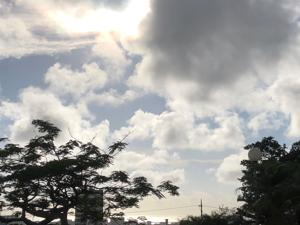
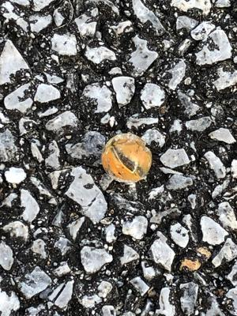

うるがいの話 ある日
最新: 窓ガラス交換【うるがいの話 ある日】とは 一日だけのプログです
『うるがいの話』の最新一日だけのプログで、通信料が少なく経済的だ。カニの画像をクリックすると全ての日付が載る『うるがいの話』サイトを表示します
|
|
【うるがいの話】 うるがい(ｳﾙｶﾞｲ urugai)とは、『もずくがに』の名前でとても大きくなります。 |
|---|---|
|
|
【カミマヤーの話】 猫のことを方言でマヤーといいます。カミマヤー（kamimayaa）とは、神の猫のことです。 |
|
【たながぁの音楽】 たながぁ（ﾀﾅｶﾞｰ tanagaa）とは手長えびのことで、何種類かあり大きいのは車 エビぐらいになります。 |

|
【ぶながぁの話】 ぶながぁ(ﾌﾞﾅｶﾞｰ bunagaa)とは、赤い髪の毛、赤い身体、そして身長は１ｍ２０ｃｍ ぐらい、川の蟹を食べているの目撃された。場所は沖縄県国頭郡大宜味村のと ある村僕の隣近所に住んでいる爺さんから、聞いた話です。 |
|
|
【ギーマの話】 ギーマ(giima)とは、山原の里山に咲くスズランに似た、 花を付けます。実は食べられます、 気が付くと口の周りが紫になっています。 |
2022年06月22日 (水）窓ガラス交換
16:11
 
ヨメのお母さんが、今月末頃に戻ってくる前提でマンションの片付けをしてい
る。今日はその中でも、重要事項であるベランダへの出入りする窓のひび割れ
のガラスを新しくするミッションである。朝から、首里にある玉那覇ガラスに
バイクで行き、事前打ち合わせをする。金ありのガラスは在庫が無いので、明
日の朝からと言うことになった。ところが、昼過ぎにガラスが準備できそうな
ので昼の２時半からどうですかと、承諾する。割れたガラスは、ベランダに面
した二部屋のいずれも右側、上下のガラスにひびがある。作業工程は窓をレー
ルから取り外し、窓のフレームをネジなどを緩め外す、そして古いガラスを取
り外し、それを元にサイズを新しいガラスのサイズを決め、そして外した枠に
埋め込みネジを絞め、枠のゴムなどを調整し窓は完成、最後にレールに戻す。
しめて一時間チョット（２名）で完了。費用は５万７千円也、明日の午前中に
支払う事にする。
１６時０７分 ビットコインの総資産 ￥７、９０４↓乱高下